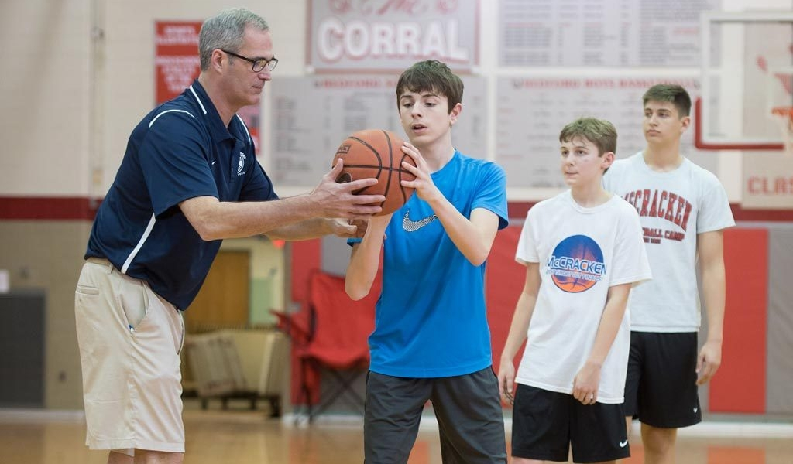

Michael and Michelle's March Madness: Services
Personal Skills Trainers
Personal trainers that will carefully design workouts based on the needs of the athlete. Our trainers will focus on areas of improvement such as shooting, ball handling, agility, defense, and much more. Contact us today about finding your personal skills trainer!
Strength Trainers
Strength trainers will assess the athele based on their age, body type, desired goals, and experience to add muscle that will improve their athletic preformance. Our trainers design workouts with the idea of creating the best basketball playrs possible but these workouts will improve the strength and preformance of any athlete!
Click here to download a sample of a personalized workout!
Nutrition Coach
At Michael and Michelle's March Madness we believe what is put into an athlete's body is just as important to an athlete's performance as the work they put in while in the gym. Due to this we have nutrition coaches that will assess an athlete based on their allergies, weight, desired weight, daily calories burned, and preformance level. We partner with one the greatest univerisity in the world, Purdue University, to provide this service.
Click here to see more information on our nutrition coaching partnering with Purdue University!
Coach Consultants
Painter, Keady, Wooden, Lambert...what did they all have in common? They were great coaches that had great coaching mentors. Our coach consultants will help anyone become a great basketball coach! Whether it is designing practices, drawing up plays, or effectice scouting methods, our coach consultants will make any coach at any level a better coach!
Click here to see a sample practice plan designed by our coach consultants!
Camps
Camps are a great way to improve an athlete's skills in a short amount of time. We offer both individual skills camps to help an athlete rapidly improve on a skill, or team camps where teams can play several games over a short period of time to enchance team comaraderie.

List of some of our great camps:
- Super Hoops Team Camp - Indiana Wesleyan
- D-One Basktball Camps
- Rick Mount Shooting School
Contact us today about signing up for one of our upcoming camps!
- Email: mmcamps@gmail.com
- Phone: (765)765-7655
- Address: 900 John R Wooden Dr, West Lafayette, IN 47906
This Document was Last Modified: